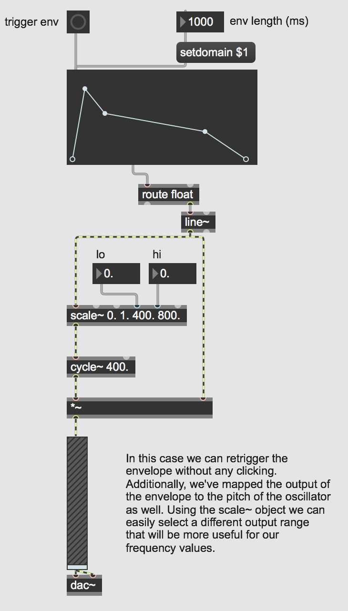

Windows and Envelopes
Open the patch "Basic Envelopes".

Each MSP object (each object that has signal input and/or output) is always producing signal as long as audio is turned on. For example, signal generators like cycle~ (a sinusoidal wave generator) are always producing a full-amplitude wave. You control the amplitude of that wave with multiplication, using * *~ * or some other object that performs a multiplication internally (such as gain~). Multiplication by a value greater than 1 increases the amplitude (amplification), and multiplication by a value between 0 and 1 decreases the amplitude (attenuation). (Multiplication by a negative number has the same sort of effect, while also inverting the signal about the x-axis.) Multiplication by 0 completely suppresses the signal (silence). In that last case, the signal generator is still working just as hard, producing its full amplitude signal, but the multiplication by 0 converts every sample to 0.
You can think of every individual sound as being surrounded by silence. You could imagine that, as in MSP, sound is always present, but during the silence its amplitude is 0 (the sound is being multiplied by 0), and when the sound is audible it is being multiplied by 1 or by some other nonzero number. Thus, the sound is audible only when its amplitude is being controlled by a nonzero value––a conceptual "window" is opened on the sound allowing it through––and the rest of the time it's being multiplied by 0 and the conceptual window is closed. This idea of a "window"––a period of nonzero values surrounded by 0 before and after––is an important concept in digital music and in digital signal processing. A sound that is off (0), then is instantaneously switched on (1), and then is later instantaneously turned off again (0) has been windowed with a rectangular-shaped function. More commonly in music software we use a window shape that is not exactly rectangular, such as a trapezoidal window with tapered ends, to avoid clicks.
One potential problem with an amplitude envelope like this is that if you re-trigger the envelope before it has completed, it will leap back to the zero point, potentially causing a click in the sound. However, if you want, you can filter out those initial float values with a route object, as in the following example. That way, instead of line~ snapping to 0. each time the function is re-triggered (because of the initial float 0. message it sends out), it will continue from whatever value it was at at the moment of the re-triggering.

In this example, a bang will cause a one-second note; if the envelope is re-triggered after less than a second (as it will be if you click fast repeatedly or if you turn on the metro), you’ll notice that there’s no annoying click, because the envelope starts from wherever it was each time it’s triggered.
Downloads
Download the files used in the above examples by right-clicking the links, and then selecting "Save Link As...".